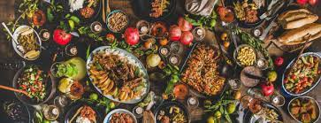

De Allerlekkerste gerechten van 2022!
wil je de lekkerste gerechten van 2022 een keer proberen?
bekijk dan nu de lijst hieronder!
gerechten:
Culy Homemade
farinata met kip, olijven en citroen
Lasagne Bolognese
met bechamelsaus
appelkruimel
toetje
auteur: Mark Bos
datum: 14/11/2022